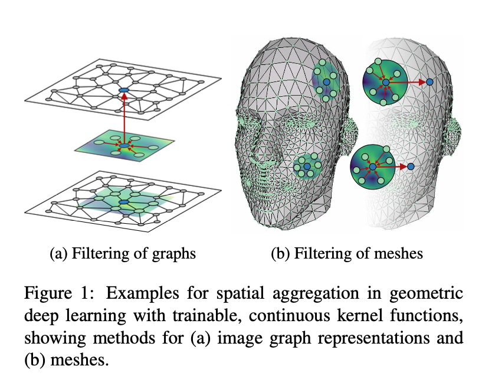

2 State of the art
2.1 FEM Simulations and applications
The Finite Element Method (FEM) is a powerful computational technique used for solving complex structural, fluid, and thermal problems in engineering and physical sciences. It works by breaking down a large problem into smaller, simpler parts known as finite elements, and then systematically solving these elements to understand the behavior of the entire system.
FEM is a numerical approximation of the continuous solution field u of any partial differential equation (PDE) given by Eq. (1) on a given domain \Omega can be performed by various methods. Some of the widely used techniques include finite element method [ref1], finite volume method [ref2], particle methods [ref3], and finite cell method [ref4]. In this contribution, we restrict the discussion to Galerkin-based finite element methods.
\mathcal{L}(u) = 0 \quad \text{on } \Omega
u = u_d \quad \text{on } \Gamma_D
\frac{\partial u}{\partial x} = g \quad \text{on } \Gamma_N
Consider the PDE in Eq. (1) defined on a domain \Omega together with the boundary conditions given by Eqs. 2 and 3. Here, u_d and g are the Dirichlet and Neumann boundary conditions on the respective boundaries. A finite element formulation of Eq. (1) on a discretization of the domain with m elements and n nodes, together with boundary conditions, will result in the system of equations shown by Eq. (4). We assume all the necessary conditions on the test and trial spaces [ref1] are fulfilled.
\begin{pmatrix} k_{1,1} & k_{1,2} & \cdots & k_{1,n} \\ k_{2,1} & k_{2,2} & \cdots & k_{2,n} \\ \vdots & \vdots & \ddots & \vdots \\ k_{n,1} & k_{n,2} & \cdots & k_{n,n} \end{pmatrix} \begin{pmatrix} u_1 \\ u_2 \\ \vdots \\ u_n \end{pmatrix} = \begin{pmatrix} F_1 \\ F_2 \\ \vdots \\ F_n \end{pmatrix}
In Eq. (4), \mathbf{K}(u) is the non-linear left hand side matrix, also called the stiffness matrix. \mathbf{u} is the discrete solution field, and \mathbf{F} is the right hand side vector. The residual of the system of equations in Eq. (4) can be written as
r(u^h) = K(u^h)u^h - F
To obtain the solution u^h, a Newton–Raphson iteration technique can be employed using the linearization of r(u^h) and its tangent matrix. This requires the solution of a linear system of equations in every iteration. These iterations are carried out until the residual norm \|r(u^h)\| meets the tolerance requirements. For a detailed discussion of the methodology, readers are referred to [ref2]. For this residual-based formulation, in case of a linear operator K, it takes only one iteration to converge. For a large number of elements and nodes, among different steps of the finite element methodology, the most computationally demanding step is the solution of the linear system of equations. In an application where computational efficiency is critical, like real time simulations [ref3] and digital twins [ref4], it is imperative that this step be avoided. Techniques suitable for such applications, like model order reduction [ref5, ref6], construct a surrogate model of Eq. (4) to reduce this cost significantly. Techniques involving neural-networks can completely avoid this cost, but will require a significant amount of training and test data, which is typically generated by simulating the underlying finite element problem. In “Finite element method-enhanced neural network for forward problems” section, we discuss an algorithm that combines residual information from a numerical method to train a neural network for linear PDEs. In this case the residual r(u^h) becomes
r(u^h) = Ku^h - F
FEM is widely used in various industries to simulate physical phenomena and optimize designs, significantly reducing production costs by allowing for virtual testing and refinement before physical prototypes are created. The method gained prominence in the 1960s and has since undergone significant advancements, driven by improvements in computer technology and numerical algorithms. Today, FEM is integral to fields such as aerospace, automotive, civil engineering, and biomedical engineering, offering highly accurate predictions and contributing to innovation and efficiency in product development.
2.1.1 Current Advancements and Challenges
Despite its significant power and advantages, FEM’s primary focus on mesh construction and solving numerous complex partial differential equations (PDEs) can lead to slow performance when dealing with highly intricate problems. This method demands substantial computational power, and each parameter change necessitates a complete re-execution, demonstrating limited flexibility in adapting to changes. Consequently, scientists are actively seeking to improve and potentially replace FEM with more efficient methods.
Due to the challenges associated with traditional FEM, mesh-free methods have consistently garnered attention. These approaches aim to address FEM’s limitations by offering greater flexibility, faster computations, and the ability to handle complex scenarios more efficiently. However, it is important to note that FEM remains comprehensive and applicable for a wide range of problems, including solid and fluid mechanics, among others. Alternative methods are often tailored to specific types of problems and applications, meaning that there is currently no complete replacement for FEM. Instead, these alternative methods are being developed and refined to provide better and more suitable solutions for specific issues. for instance in Zhang et al. (2024) Mesh-free methods for crack problems have been reviewed.
Among the proposed approaches, the Smoothed Particle Hydrodynamics (SPH) [] , the Element-Free Galerkin Method (EFGM) [] and the Material Point Method (MPM) [] have been notable efforts. SPH employs particles to simulate fluid elements and interactions, proving particularly effective for complex fluid dynamics problems. EFGM, on the other hand, utilizes nodes and shape functions to approximate solutions, providing significant flexibility and accuracy for intricate geometries and boundary conditions. Additionally, MPM represents materials as moving points through a computational grid, making it especially suitable for scenarios involving large deformations and complex material behaviors. These mesh-free approaches offer enhanced adaptability and computational efficiency, addressing some of the core limitations of FEM.
In this thesis however, our focus on FEM is specifically related to structural analysis and deformation problems. Among the mesh-free methods introduced in this field, the EFGM and the MPM are particularly relevant. These methods provide promising alternatives to traditional FEM by enhancing computational efficiency and adaptability in solving mechanical and deformation-related problems.
2.2 Replacing FEM with AI Approaches
Similar to other fields, the application of AI in FEM has a relatively long history. While a comprehensive solution to completely replace FEM is yet to be found, AI’s advancements in this area are promising.
in Zhang et al. (2024) the Mesh-free methods for crack problems have been reviewed.
with examples such as neural networks for stress analysis, which have been proposed for specific applications[].
For deformation problems, solutions often involve simplifying the problem to 2D images and employing image processing techniques[].
Advancements in replacing the Finite Element Method (FEM) are not confined to a few specific techniques. Instead, various solutions have been proposed depending on the nature of the problem, the type of data, and the complexities involved. These diverse approaches reflect the need for tailored solutions to effectively address the unique challenges presented by different FEM applications.
Physics-Informed Neural Networks (PINNs) are another innovative approach, integrating physical laws into the learning process to solve PDEs. In the following sections, we will review some of the most significant works related to our problem:
2.2.1 Physics informed Neural Networks (PINN)
Physics-Informed Neural Networks (PINNs) Raissi et al. (2019) are a class of neural networks that integrate physical laws described by partial differential equations (PDEs) into the learning process. They leverage the universal approximation capability of neural networks to solve forward and inverse problems governed by PDEs. The core idea of PINNs is to minimize a loss function that includes both the data-driven error and the residuals of the PDEs, thereby ensuring that the learned solution satisfies the underlying physical laws.
In the context of a PDE, such as \mathcal{N}(u(x)) = 0, where \mathcal{N} is a differential operator and u(x) is the solution, the loss function \mathcal{L} for a PINN can be expressed as:
\mathcal{L} = \mathcal{L}_{\text{data}} + \mathcal{L}_{\text{PDE}}
Here, \mathcal{L}_{\text{data}} represents the mean squared error (MSE) between the neural network’s predictions u_{\theta}(x) and the observed data points u_{\text{obs}}(x):
\mathcal{L}_{\text{data}} = \frac{1}{N} \sum_{i=1}^{N} \left( u_{\theta}(x_i) - u_{\text{obs}}(x_i) \right)^2
The term \mathcal{L}_{\text{PDE}} enforces the PDE constraints by computing the MSE of the residuals at collocation points x_c:
\mathcal{L}_{\text{PDE}} = \frac{1}{M} \sum_{j=1}^{M} \left( \mathcal{N}(u_{\theta}(x_{c_j})) \right)^2
By optimizing the combined loss \mathcal{L}, the neural network is trained to produce a solution that fits the observed data while also satisfying the physical constraints imposed by the PDE.
PINNs have been successfully applied to various challenging problems, including fluid dynamics, structural mechanics, and electromagnetic simulations. Their ability to incorporate prior physical knowledge directly into the learning process makes them a powerful tool for modeling complex systems where data is scarce or noisy. Additionally, PINNs can be used for solving inverse problems, where the goal is to infer unknown parameters or functions within the PDEs, by including terms in the loss function that account for the discrepancies between the predicted and observed data, as well as the governing physical laws. This versatility highlights the potential of PINNs in enhancing the accuracy and robustness of simulations in scientific and engineering applications.
2.2.2 Image based fems …
Despite significant advancements in various fields, a comprehensive model specifically designed to address the problem of 3D shape deformation using AI has not yet been developed (as of the time of writing this thesis). Many existing methods are frequently confined to 2D spaces, with fewer efforts made to extend these solutions to 3D problems. In real-world applications, interacting with 3D data is preferable as it more closely resembles actual conditions, enhancing the realism and accuracy of simulations. Expanding AI applications to 3D FEM simulations can significantly improve their applicability and fidelity in real-world scenarios.
On the other hand, various AI techniques for working with 3D data have been actively pursued in domains such as computer graphics, 3D reconstruction, 3D object classification etc. It is important to note that this is a multidisciplinary issue, requiring collaboration across different scientific fields. Interaction among specialists from various domains is crucial to finding a common ground and proposing more effective solutions. This interdisciplinary cooperation is essential for aligning different areas of expertise to develop more robust and effective methods for 3D shape deformation.
Therefore, in this section, we will explore computer science methods that are similar to our problem and work with 3D data using AI tools. The work presented here is relatively specialized, and as of now, no existing AI method has been found that directly addresses our specific problem. However, we can expect to see an increase in intelligent models tackling this issue in the near future. The continued development of AI in this area holds great promise for improving the accuracy and efficiency of simulations involving 3D shape deformation.
2.3 Introduction to Deep Neural Networks
Deep Neural Networks (DNN) represent a significant evolution in the field of artificial intelligence, particularly in machine learning and pattern recognition. Building on the foundation of traditional neural networks, DeepNNs consist of multiple layers of interconnected neurons, allowing them to model complex patterns and relationships in data more effectively than shallow networks. The advent of DeepNNs has revolutionized numerous fields, including computer vision, natural language processing, and reinforcement learning, marking a pivotal shift in the capabilities of AI systems.
The concept of neural networks dates back to the mid-20th century, with the introduction of the perceptron by Frank Rosenblatt in 1958. However, the journey towards DeepNNs gained momentum only in the 1980s, with the development of the backpropagation algorithm, a critical breakthrough enabling the training of multi-layered networks. Backpropagation, introduced by Rumelhart, Hinton, and Williams in 1986, made it feasible to adjust the weights of neural networks through gradient descent, efficiently minimizing the error between predicted and actual outcomes. This algorithm remains at the heart of training deep networks, enabling them to learn complex functions from data.
Despite these early advances, DeepNNs struggled to gain traction due to computational limitations and the challenge of vanishing gradients, a problem where gradients used to update the weights become increasingly small in deeper layers, hindering effective learning. This issue was addressed by the introduction of more advanced activation functions like ReLU (Rectified Linear Unit), which helped maintain more consistent gradients, and by innovations such as batch normalization and more sophisticated weight initialization techniques.
Key Concepts and Advancements One of the core principles behind the success of DeepNNs is gradient descent, an optimization algorithm used to minimize the loss function. The loss function L(\theta) quantifies the error in the network’s predictions, where \theta represents the network’s parameters (weights and biases). Gradient descent iteratively adjusts \theta in the direction opposite to the gradient of the loss function, formally expressed as:
\theta_{t+1} = \theta_t - \eta \nabla_\theta L(\theta_t)
where η is the learning rate, and \nabla_\theta L(\theta_t) is the gradient of the loss function with respect to the parameters. However, the success of gradient descent in deep networks relies heavily on effective weight initialization, appropriate activation functions, and strategies to mitigate overfitting and vanishing gradients. The introduction of ReLU activation functions, expressed as f(x)=max(0,x), was instrumental in overcoming the vanishing gradient problem by ensuring that gradients remain significant in deeper layers, thus allowing for better learning and performance.
Additionally, innovations like convolutional layers in CNNs, recurrent layers in RNNs, and attention mechanisms in transformers have expanded the applicability and power of DeepNNs. CNNs have revolutionized image processing, RNNs have enabled effective modeling of sequential data, and transformers have set new benchmarks in natural language processing.
A crucial aspect of neural networks is the dataset. Typically, the model is trained on a large amount of training data, validated on a separate validation set, and then tested on unseen test data to evaluate its performance. The selection and preprocessing of data are of particular importance in this process. Neural networks often operate best when the data is scaled within a specific range, usually between 0 and 1. Therefore, considerable effort is made to ensure that the data is normalized to fall within this optimal range, which significantly contributes to the effectiveness of the model.
The success of these architectures has been further amplified by large-scale datasets and the availability of massive computational resources, leading to groundbreaking achievements such as Google’s AlphaGo, OpenAI’s GPT models, and various state-of-the-art systems in image and speech recognition.
2.4 Autoencoders
An autoencoder is a type of neural network designed to learn a compressed, efficient representation of input data. It consists of two main components: an encoder and a decoder. The encoder compresses the input data into a lower-dimensional representation, often referred to as the latent space or bottleneck. The decoder then attempts to reconstruct the original input from this compressed representation. The goal is to minimize the difference between the input and the reconstructed output.
Mathematically, the process can be represented as: \mathbf{z} = f_\theta(\mathbf{x})
\hat{\mathbf{x}} = g_\phi(\mathbf{z})
Here, \mathbf{z} is the latent representation of the input \mathbf{x}, and \hat{\mathbf{x}} is the reconstructed output. The objective of the autoencoder is to minimize the reconstruction loss, commonly measured as the mean squared error (MSE):
L(\mathbf{x}, \hat{\mathbf{x}}) = \| \mathbf{x} - \hat{\mathbf{x}} \|^2_2
Autoencoders are particularly useful in areas such as dimensionality reduction and reconstruction, where they compress high-dimensional data into a lower-dimensional latent space and then accurately reconstruct the original data. They also excel in denoising by removing noise from corrupted data, and in anomaly detection by identifying outliers based on reconstruction errors. Additionally, autoencoders are valuable in generative modeling, contributing to the creation of new, similar data samples, which is especially beneficial in image synthesis and data augmentation.
2.5 3D Deep Learning
Three-dimensional (3D) data processing using deep learning has become increasingly important in fields such as computer vision, robotics, and virtual reality. The way 3D data is represented plays a critical role in the design of models, the training process, and the final output. Depending on how the data is structured and represented, 3D deep learning can be categorized into several approaches. The most common representations include point clouds, meshes, and multi-view images, which are considered explicit forms of 3D data. Each of these representations has its unique challenges and benefits, influencing the choice of network architecture and the methods used for training.
In addition to explicit representations, implicit representations have gained significant attention in recent years. Unlike explicit forms, where the 3D data is directly stored and processed, implicit representations model the 3D structure in a more abstract way, such as through occupancy fields or signed distance functions. These newer approaches allow for more flexible and continuous representation of 3D shapes, often leading to better generalization and smoother reconstructions. Due to their efficiency and ability to handle complex geometries, implicit representations are becoming increasingly popular in state-of-the-art 3D deep learning applications.
2.5.1 NN and Explicit representations : Point Clouds
2.5.1.1 PointNet, PointNet++
2.5.2 NN and Explicit representations : Mesh
Meshes are one of the most widely used explicit representations in 3D deep learning, particularly in fields like computer graphics, medical imaging, and 3D modeling. A mesh is essentially a specific form of graph, composed of vertices (points in 3D space) and edges (connections between vertices), which together form faces that define the surface of a 3D object. This representation is highly expressive, capturing intricate details of an object’s surface geometry and topology. Unlike more regular data structures such as images or point clouds, meshes have a non-Euclidean structure, presenting unique challenges for neural networks that need to process this type of data. To address these challenges, specialized neural network architectures like graph neural networks (GNNs) or convolutional neural networks adapted for non-Euclidean spaces (e.g., mesh convolutional networks) are often used. These networks are designed to leverage the connectivity information inherent in meshes, allowing them to learn and extract meaningful features directly from the mesh’s topology. Therefore, these GNNs are highly effective for data with a graph-like structure, where connections between verices are crucial, such as social network or molecular graphs, where understanding complex relational patterns is crucial. However, when the mesh geometry and the positions of the vertices themselves become important, these networks face significant challenges. Examples of networks that have addressed this issue in geometric deep learning for classification, under specific constraints, include MeshCNN, SplineCNN, and CoMA Ranjan et al. (2018).
2.5.2.1 Convoutional Mesh AutoEncoder (CoMA)
The Convolutional Mesh AutoEncoder (CoMA), introduced in 2017, is a neural network architecture specifically designed to process 3D mesh data.
Unlike traditional autoencoders, which are inherently designed for structured, grid-like data such as images, CoMA is specifically engineered to tackle the complexities of irregular 3D mesh structures. Traditional convolutional neural networks (CNNs) excel in processing data arranged in regular grids, where each pixel or voxel is neatly aligned with its neighbors. However, 3D meshes are fundamentally different—they consist of vertices connected by edges forming irregular polygons, typically triangles, that define the surface of a shape. These irregularities present significant challenges for standard CNNs, which rely on the spatial consistency of grid data to apply convolutional operations effectively.
CoMA overcomes these challenges by extending convolutional operations from regular grids to graph structures, where the mesh vertices and their connections (edges) form a graph. This adaptation is made possible through spectral graph convolutional layers, which operate in the frequency domain, allowing the network to process the mesh’s geometry in a way that respects its inherent irregularity. These layers perform convolutions not in the traditional spatial sense, but by filtering the mesh’s geometric features across its graph-based structure. This allows CoMA to capture both local and global geometric information, which is crucial for accurately representing complex 3D shapes.
The architecture of CoMA is built around a symmetric encoder-decoder design, where both the encoder and decoder consist of four layers. The encoder’s role is to compress the high-dimensional mesh data into a lower-dimensional latent space. This compression is achieved through the spectral graph convolutional layers, which progressively reduce the resolution of the mesh while preserving its most significant geometric features. The latent space effectively captures the high-level, abstract representation of the 3D shape, distilling its most important characteristics into a compact form.
Once the mesh data is compressed into this latent space, the decoder takes over, reconstructing the original high-resolution mesh from the compact representation. The decoder mirrors the encoder’s structure, using upsampling operations and inverse convolutions to progressively restore the mesh’s resolution. This reconstruction process allows CoMA to generate a detailed and accurate representation of the original 3D shape, ensuring that essential geometric properties are preserved throughout the process. The combination of these advanced techniques enables CoMA to learn and manipulate complex 3D shapes efficiently, making it a powerful tool for tasks like shape reconstruction, deformation transfer, and facial expression synthesis.
A key innovation of CoMA is its ability to handle the irregular topology of meshes through spectral graph convolutions, which operate in the frequency domain. By leveraging Chebyshev polynomials and fast localized convolutions, the model efficiently processes mesh data. However, it is important to note that all mesh samples in the dataset must share the same topology, and a model trained on one dataset is not easily extendable to others. Additionally, the input mesh must exhibit properties such as regularity, uniform connectivity, and also a consistent hierarchical structure to support both downsampling and upsampling operations. Without these properties, operations like pooling and unpooling can become problematic, potentially necessitating remeshing to create a dataset suitable for CoMA. Furthermore, the network’s first - and last - layers must have a size of 3 times the number of vertices to represent XYZ positions, which can result in a large model when dealing with high-resolution meshes. Therefore, while CoMA is powerful for tasks like 3D shape reconstruction, facial expression synthesis, and deformation transfer, it does have specific requirements and limitations regarding the structure and properties of the input meshes.
2.5.2.2 SplineCNN
Fey et al. (2018) SplineCNN is a type of convolutional neural network designed to operate on non-Euclidean domains, such as graphs and meshes, where data is irregular and connectivity information is crucial. Unlike traditional CNNs that use fixed rectangular kernels, SplineCNN employs learnable B-spline kernels that can adapt to the underlying structure of the data, allowing the network to perform convolutions directly on the graph or mesh. This flexibility enables SplineCNN to effectively capture both the local geometric structure and the connectivity patterns, making it well-suited for tasks like 3D shape analysis and graph-based classification.

SplineCNN has demonstrated its effectiveness by improving state-of-the-art results in several benchmark tasks, including image graph classification, graph node classification, and shape correspondence on meshes. For the task of shape correspondence, SplineCNN was validated on a collection of 3D meshes, solving the challenge of matching each node of a given shape to the corresponding node of a reference shape. However, the dataset used in this experiment had a significant limitation: all meshes shared the same topology, requiring that the mesh sizes and node orders remain consistent across the entire dataset, which is a considerable constraint.
2.5.2.3 MeshCNN
Hanocka et al. (2019)
MeshCNN is a specialized neural network architecture designed to process 3D mesh data by adapting convolutional operations to the irregular, non-Euclidean structure of meshes. Unlike traditional CNNs that operate on grid-like data, MeshCNN applies convolutions directly on the edges of a mesh, enabling the network to capture the geometric and topological features inherent in 3D shapes. The architecture employs edge-based convolutions and pooling operations to reduce the mesh’s complexity while preserving its essential properties, making it particularly effective for tasks such as 3D shape classification and segmentation. This approach is well-suited for scenarios where understanding the detailed geometry and topology of 3D objects is crucial, such as distinguishing between different types of 3D models or segmenting parts of a 3D object.
However, MeshCNN also introduces certain complexities and limitations. The input dimensionality is defined by the number of features per edge multiplied by the total number of edges, which can lead to increased computational demands, particularly for large meshes. Additionally, the architecture requires a consistent and well-defined mesh structure, often necessitating preprocessing steps like remeshing or simplification to ensure compatibility. This dependence on specific mesh topologies can limit the network’s generalization to different types of meshes, and the computational load may challenge scalability in scenarios with varying mesh structures or limited resources.
2.5.2.4 MeshNet
Feng et al. (2019)
2.6 NN and Imlicit representations
2.6.0.1 DeepSDF
Park et al. (2019)
The most direct application of this approach is to train a single deep network for a given target shape as depicted in Fig X Given a target shape, we prepare a set of pairs ( X ) composed of 3D point samples and their SDF values:
X := \{(x, s) : \text{SDF}(x) = s\}
We train the parameters \theta of a multi-layer fully-connected neural network f\_\theta on the training set $ S $ to make f\_\theta a good approximator of the given SDF in the target domain \Omega :
f_\theta(x) \approx \text{SDF}(x), \forall x \in \Omega